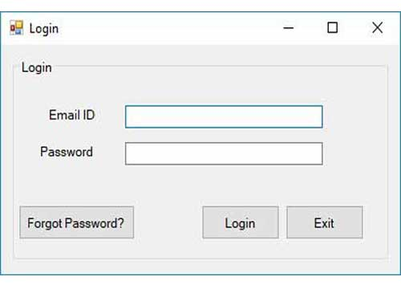
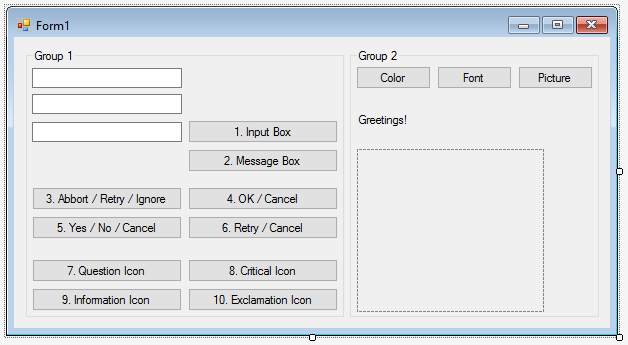
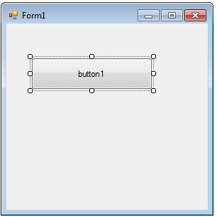

Project 5
Windows Forms
Terwijl de meeste in deze richting hebben geprogrammeerd in .NET heb ik ook gewerkt in Windows FORM applicaties. Het verschil hier is dat je vooral met acties gaat werken.
Hier in kan je werken met Buttons, checkboxen, lists...
In de oefening die ik jullie nu ga laten tonen werd ons gevraagd de scores van een Formule wedstrijd bij te houden. Deze gegevens gingen in een SQL database.
We lieten de gebruiker van deze applicatie alle data zelf invullen.
Team, Naam coureur, snelste lap, plaats, welk circuit, aantal pitstops,...


